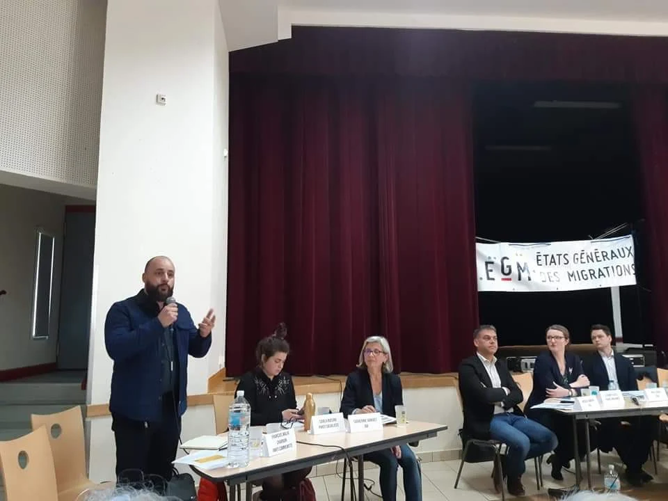

Publication sur X
À Niort, un échange sur les politiques migratoires européennes
Date de publication sur X · 29 avril 2019
Repères éditoriaux
Notre camarade François Malik Charron est intervenu sur les politiques migratoires européennes. La photographie montre la salle et la table de la rencontre.
Texte de la publication sur X
Ce soir, devant plus de 100 personnes, brillantes interventions de notre camarade François Malik Charron sur le thème des politiques migratoires européennes qui font honneur aux positions du PCF sur le sujet. https://t.co/nUFt8mfYnI

Sources
PCF 79 · @79Parti sur X · AR-0005-TW-1122972809054044172
À lire aussi · « Cercle de silence 167 ». La vidéo du rassemblement